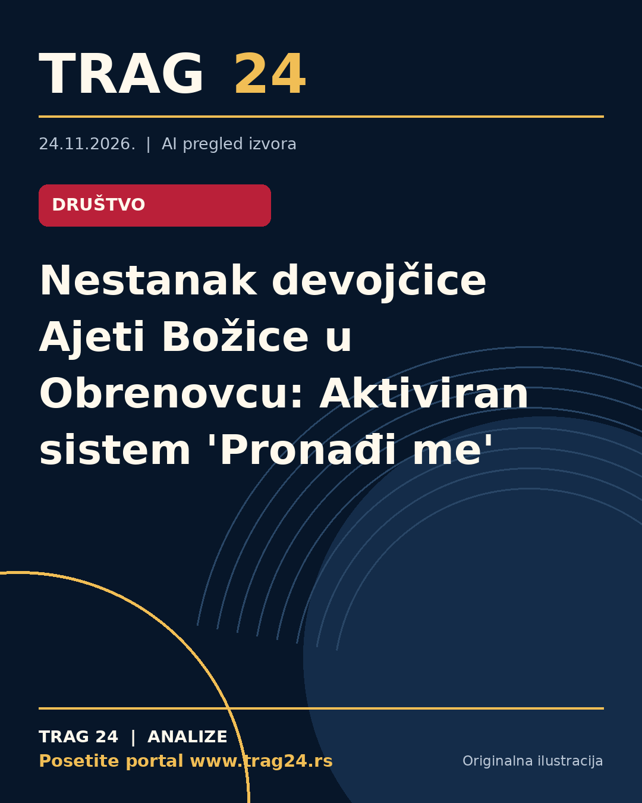

Nestanak devojčice Ajeti Božice u Obrenovcu: Aktiviran sistem 'Pronađi me'

ŠTA SE DOGODILO
Četrnaestogodišnja devojčica Ajeti Božica nestala je 23. novembra 2026. godine u Obrenovcu. Devojčica je tog dana otišla u školu, iz Osnovne škole „Jovan Jovanović Zmaj“, oko 11 sati, ali se nije vratila kući. Nakon njenog nestanka, Ministarstvo unutrašnjih poslova aktiviralo je sistem "Pronađi me", namenjen brzoj reakciji i pronalaženju nestalih osoba.
HRONOLOGIJA
Ajeti Božica je živela u hraniteljskoj porodici u Obrenovcu. Na dan nestanka, ujutru je krenula u školu, ali se iz škole nije vratila te je njen nestanak prijavljen policiji istog dana oko 11 časova. Odmah nakon toga pokrenute su intenzivne potrage, uključujući i aktivaciju sistema "Pronađi me" koji omogućava brzo širenje informacije o nestaloj osobi.
ŠTA NAVODE IZVORI
Prema informacijama iz medija, devojčica je visine oko 160 cm, mršave građe, sa braon očima i dugom crnom kosom. Na sebi je imala sivu jaknu, crnu duksericu, crne helanke i bordo patike. Ministarstvo unutrašnjih poslova pozvalo je građane da ukoliko imaju bilo kakve informacije o devojčici, jave na dostupne brojeve telefona kako bi se potraga ubrzala. Takođe, mediji su naglašavali aktivaciju sistema "Pronađi me" kao važnu meru za pronalaženje Ajeti.
ŠTA JE POTVRĐENO
Potvrđeno je da je devojčica nestala u Obrenovcu 23. novembra 2026. godine i da je sistem "Pronađi me" zvanično aktiviran od strane policije kao deo potrage. Opis odeće i fizičkih karakteristika je javan, a apeli policije i medija usmereni su ka građanima radi pomoći u pronalaženju devojčice. Nije prijavljeno da je devojčica pronađena do sada.
ŠTA NIJE POTVRĐENO
Nije potvrđeno ni saopšteno da je devojčica locirana ili da je slučaj okončan. Nema podataka o bilo kakvim okolnostima nestanka koje bi ukazivale na konkretne uzroke ili uključene osobe. Nema potvrda o eventualnoj opasnosti ili sumnjama vezanim za nestanak.
ŠTA OSTАJE OTVORENO: Potraga za devojčicom i dalje traje, a otvoreno ostaju pitanja o razlozima njenog nestanka i lokaciji na kojoj se trenutno nalazi. Uskoro se može očekivati više informacija od Ministarstva unutrašnjih poslova ukoliko bude novih saznanja ili pronalaska devojčice. Takođe ostaje otvoreno pitanje kako će se dalje sprovesti potraga i da li će biti uključeni dodatni kapaciteti u cilju njenog pronalaska.
Izvori
- https://informer.rs/drustvo/vesti/1172976/obrenovac-nestala-devojcica-bozica-ajeti
- https://www.b92.net/info/hronika/287840/nestala-devojcica-ajeti-bozica-14-u-obrenovcu-aktiviran-sistem-pronadji-me/vest
- https://www.telegraf.rs/vesti/beograd/4439225-nestala-devojcica-u-obrenovcu-aktiviran-sistem-pronadji-me
Ova analiza je pripremljena uz pomoć veštačke inteligencije na osnovu javno dostupnih izvora. Navodi izvora nisu nužno nezavisno potvrđeni.